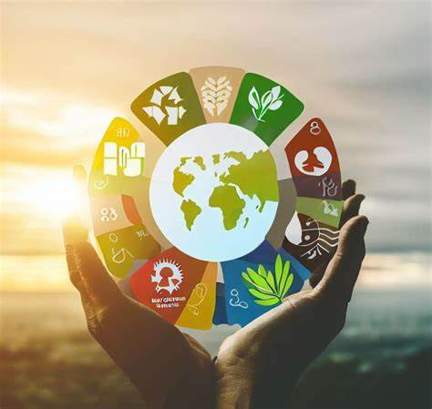

Sustainable development is an approach to growth and human development that aims to meet the needs of the present without compromising the ability of future generations to meet their own needs. The aim is to have a society where living conditions and resources meet human needs without undermining planetary integrity. Sustainable development aims to balance the needs of the economy, environment, and society.
Sustainability is a social goal for people to co-exist on Earth over a long period of time.
Sustainability usually has three dimensions (or pillars): environmental, economic,and social The idea of sustainability can guide decisions at the global, national, organizational, and individual levelsA related concept is that of sustainable development, and the terms are often used to mean the same thing.
Sustainable development, like sustainability, is regarded to have three dimensions: the environment, economy and society. The idea is that a good balance between the three dimensions should be achieved. Instead of calling them dimensions, other terms commonly used are pillars, domains, aspects, spheres.
Six interdependent capacities are deemed to be necessary for the successful pursuit of sustainable development. These are the capacities to measure progress towards sustainable development; promote equity within and between generations; adapt to shocks and surprises; transform the system onto more sustainable development pathways; link knowledge with action for sustainability; and to devise governance arrangements that allow people to work together

Young people bring innovation, creativity, and a natural affinity for technology. Engaging them in sustainability projects like recycling programs, community gardens, or technology-driven solutions for energy conservation can instill a sense of responsibility and environmental stewardship from a young age

Adults in their working years are often the economic backbone of a community. They can contribute by advocating for sustainable practices within local businesses, supporting or starting eco-friendly initiatives, and participating in local governance to steer policies towards sustainable development

Older adults possess a wealth of knowledge and experience. They can mentor younger generations, provide historical context to community issues, and promote traditional practices that are environmentally sustainable. Moreover, their active participation helps reduce feelings of isolation and promotes mental health.
Continuous education and awareness-raising activities are crucial. Workshops, seminars, and interactive sessions that cater to different age groups can help disseminate knowledge about sustainability practices and encourage their adoption.
Local governments should integrate multi-age inclusive policies that address the needs and capabilities of all age groups. Policies could include flexible work arrangements to encourage adult participation in community activities, educational reforms to incorporate sustainability into school curricula, and health and mobility services to enhance senior citizens’ participation.
Utilizing technology can bridge the gap between different age groups. For instance, apps that monitor energy use can engage tech-savvy youths and can be simplified for senior users. Similarly, virtual platforms can facilitate the sharing of knowledge and skills across age groups, promoting community cohesion.
Creating spaces that are accessible and appealing to all age groups can foster interactions and collaboration. These spaces can host markets for local produce, venues for cultural and educational events, and areas for environmental initiatives, thereby becoming hubs of sustainable practices
Developing a multi-age sustainable community is not merely a beneficial strategy—it is a necessity for fostering an equitable and resilient future. By leveraging the diverse strengths of all age groups, communities can achieve sustainability goals more effectively and ensure that everyone, regardless of age, can contribute to and benefit from sustainable development practices.
Pollution is an unfavorable alteration in the physical, chemical or biological characteristics of air, water and land that may or will adversely affect human life, industrial life, industrial progress, living conditions and cultural assets
The substances that cause the undesirable changes in the air, water and land are referred to as the pollutants. Thus, pollutant is a substance (e.g ., dust, smoke), chemicals (e.g ., SO2 or Methyl mercury) or factor (like heat, noise etc.) that on release into the environment has an actual or potential adverse effect on human interests.
According to WHO Air pollution is defined as " .... Phenomenon in which substances put into air by the activity of mankind into concentration sufficient to cause harmful effect to his health, vegetables, property or interfere with the enjoyment of his property ..... "
The various sources of air pollution are : Industrial pollutants: . CO, CO2, SO2, H2S and hydrocarbons are most common air pollutants which are discharged into air from industrial chimneys and power houses. These gases are produced due to burning of fossil fuels and by combustion of lignite at thermal power stations.
. It has been observed that industrial processors like metallurgical plants and smelters, chemical plants, petroleum refineries, pulp and paper mills, sugar mills and cotton mills and synthetic rubber manufacturing plants are responsible for about one-fifth of the air pollution.
Automobiles (cars, scooters, motor cycle etc.) have been regarded as the greatest sources of air pollution. They produce nearly 2/3 of the carbon monoxide and 1/2 of the hydrocarbons and nitrous oxides. The automobile exhaust has also leaded gas and particulate lead. The combustion of petroleum emits particulate lead compounds.
Benzene, toluene and xylene are the three volatile organic compounds (VOC) present in urban atmosphere mainly due to use of petrol and diesel in automobiles. The concentrations of benzene in air showed strong correlations with the incidence of cancer.
. Fossil fuels are the sources of energy for cooking, heating, lightening our houses, washing clothes through washing machine, or for running TV etc. Coal and a variety of hydrocarbons including methane and soot, ashes and SO2 are also the products of coal burning. It has been recorded that electrical power plants, burning fossil fuels, particularly coal and sometimes petrol or diesel, produce two-thirds of the SO2.
In majority of the Indian cities, towns and villages cooking is done by burning colas, which is an important cause behind the increment of benzene concentration in the atmosphere.
The Air Quality Index (AQI) is an indicator used by government agencies to communicate the current level of air pollution to the public. It measures relative outdoor air quality and pollution levels in a given area, using colors, numbers, and words to convey the information. The AQI focuses on health effects that may occur within a few hours or days after breathing polluted air
LIVE AQIAir pollution is a significant risk factor for multiple health conditions including respiratory infections, heart disease, and lung cancer, according to the WHO
The health effects caused by air pollution may include difficulty in breathing, wheezing, coughing, asthma and aggravation of existing respiratory and cardiac conditions.
Principally affect the body's respiratory system and the cardiovascular system
Individual reactions to air pollutants depend on the type of pollutant a person is exposed to, the degree of exposure, the individual's health status and genetics
Around the world, children living in cities with high exposure to air pollutants are at increased risk of developing asthma, pneumonia and other lower respiratory infections.
Because children are outdoors more and have higher minute ventilation for which they are more susceptible to the dangers of air pollution. Risks of low initial birth weight are also heightened in such cities.
Solution efforts on pollution are always a big problem. This is why prevention interventions are always a better way of controlling air pollution. These prevention methods can either come from government (laws) or by individual actions.
So air pollution is regarded as a grave danger for the healthy sustenance of all forms of life on this earth. The various measures to control air pollution are given below
Governments throughout the world have already taken action against air pollution by introducing green energy. Some governments are investing in wind energy and solar energy, as well as other renewable energy, to minimize burning of fossil fuels, which cause heavy air pollution.
Companies should build more energy efficient vehicles, which pollute less than before. Pollution caused by two stroke engines can only be minimized by using the technology for four stroke engines.
www.google.com
www.wikipedia.com
www.slideshare.com